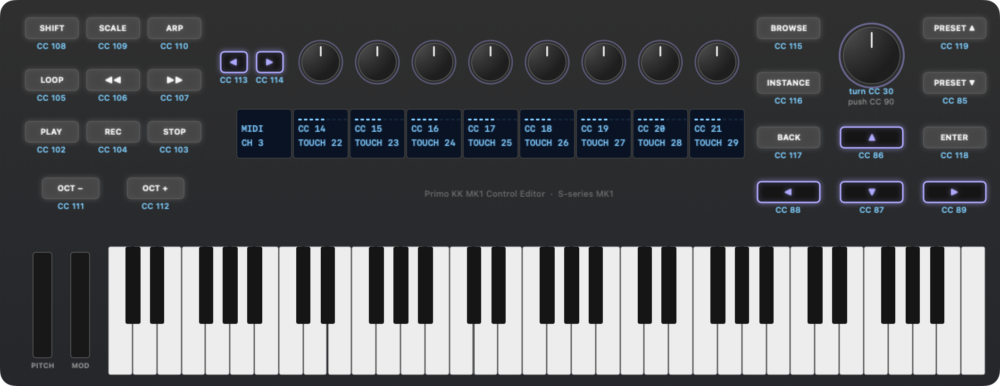
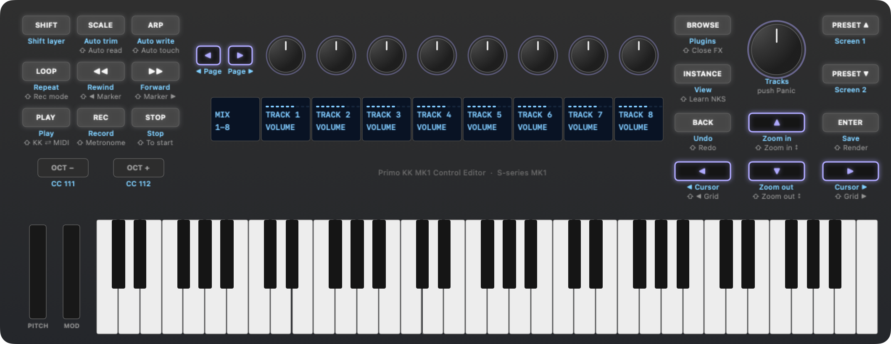
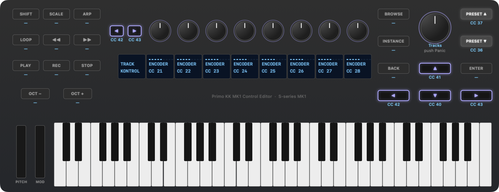

PrimoKKMK1Bridge User Guide¶
Custom Native Instruments Komplete Kontrol S-series MK1 (S25/S49/S61/S88) MIDI controller driver for macOS; bringing complete configurability (every button, knob and touch), basic NKS support and REAPER DAW integration to the no longer supported MIDI controller. PrimoKKMK1Bridge replaces the need for the Native Instruments drivers (NIHardwareAgent, NIHostIntegrationAgent) and Controller Editor.
The system consists of two programs:
- The bridge (
PrimoKKMK1Bridge) talks to the keyboard and runs in the background - replaces the proprietary Native Instruments drivers. - The editor (PrimoKKMK1Editor) is a Mac app for changing the assignments and settings of the keyboard, and for starting and stopping the bridge - replaces the Native Instruments Controller Editor.
PrimoKKMK1Editor contains an embedded
PrimoKKMK1Bridgeso there is no need to install anything else.
Supported Hardware¶
- Native Instruments Komplete Kontrol S-series MK1 keyboard (S25/S49/S61/S88). Tested on an S61 MK1, firmware 72. The S25, S49 and S88 should work but haven't been tested.
- Apple macOS 14 or later, Apple Silicon or Intel.
- [Optional] Cockos REAPER to utilize REAPER mode. Tested on REAPER 7.61.
Install¶
- From the releases page, download
PrimoKKMK1Editor-<version>-macOS-arm64.zipfor an Apple Silicon Mac, orPrimoKKMK1Editor-<version>-macOS-universal.zipfor an Intel Mac (it runs on either), and unzip it. - Copy PrimoKKMK1Editor.app to your Applications folder.
- The app is signed for local use only, not notarized by Apple, so macOS blocks it the first time. Either open
it once and click Open Anyway in System Settings ▸ Privacy & Security, or run this in Terminal:
Use thexattr -dr com.apple.quarantine /Applications/PrimoKKMK1Editor.appxattrcommand if you'll start the bridge at login: it clears the bridge inside the app too.
To build it yourself instead, see Build and run.
Getting Started¶
- Plug in the keyboard and open Primo KK MK1 Control Editor.
- Turn on the bridge switch in the toolbar. The light next to it turns green, the keyboard's buttons light up, and the displays wake up.
- In your DAW, use the MIDI input Primo Komplete Kontrol MK1. It carries the keys, the pitch and mod strips and every control, so one input is all a track needs.
Notes:
- Don't give a track both ports. The keyboard's own port, KOMPLETE KONTROL S Port 1, still sends the keys
too, so never give a track that and
Primo Komplete Kontrol MK1, orAll MIDI inputs- every note would arrive twice. - The bridge keeps running when you quit the editor. Turn the switch off to stop it.
- After the bridge stops, the keyboard stays in native mode, with silent knobs, until you unplug and replug it or start the bridge again.
- The config file is created the first time you run the editor or the bridge, with every default:
~/Library/Application Support/PrimoStudios/PrimoKKMK1Bridge/PrimoKKMK1Bridge.json. A new config starts in MIDI mode. For REAPER, turn on Enabled under REAPER Mode on the editor's Settings page.
Start the Bridge at Login¶
To have the bridge start when you log in, without the editor, turn on Launch Bridge at Login under Login on the editor's Settings page. The bridge will now start automatically the next time you login.
How it behaves:
- After a crash, it's started again.
- With the editor's switch, you can still turn it off. That's a normal quit, so it stays off until your next login, and the switch can turn it back on.
- Log Output goes to
~/Library/Logs/PrimoKKMK1Bridge.log. Choose Bridge | Show Log from the editor's menu bar to view the log. - Turning it off stops it starting at your next login. An already running bridge stays active until you turn it off with the switch or log out.
Under the hood it's a LaunchAgent, ~/Library/LaunchAgents/com.primostudios.PrimoKKMK1Bridge.plist.
Setting it up by hand instead
For the app in the Applications folder, paste these into Terminal; the first one is long:
mkdir -p ~/Library/LaunchAgents ~/Library/Logs && cat > ~/Library/LaunchAgents/com.primostudios.PrimoKKMK1Bridge.plist <<EOF
<?xml version="1.0" encoding="UTF-8"?>
<!DOCTYPE plist PUBLIC "-//Apple//DTD PLIST 1.0//EN" "http://www.apple.com/DTDs/PropertyList-1.0.dtd">
<plist version="1.0">
<dict>
<key>Label</key><string>com.primostudios.PrimoKKMK1Bridge</string>
<key>ProgramArguments</key>
<array><string>/Applications/PrimoKKMK1Editor.app/Contents/MacOS/PrimoKKMK1Bridge</string></array>
<key>RunAtLoad</key><true/>
<key>KeepAlive</key><dict><key>SuccessfulExit</key><false/></dict>
<key>ProcessType</key><string>Interactive</string>
<key>StandardOutPath</key><string>$HOME/Library/Logs/PrimoKKMK1Bridge.log</string>
<key>StandardErrorPath</key><string>$HOME/Library/Logs/PrimoKKMK1Bridge.log</string>
</dict>
</plist>
EOFlaunchctl bootstrap gui/$(id -u) ~/Library/LaunchAgents/com.primostudios.PrimoKKMK1Bridge.plistThat also starts the bridge right away. To undo it:
launchctl bootout gui/$(id -u)/com.primostudios.PrimoKKMK1Bridge; rm ~/Library/LaunchAgents/com.primostudios.PrimoKKMK1Bridge.plistThe Editor¶
The editor allows you to customize button and encoder mappings and configure the behavior of the bridge. The editor replaces the functionality of the Native Instruments Controller Editor.
Configure mappings on the keyboard in the main window. Click a button, knob or strip, and the inspector panel on the right shows the current assignments and enables you to update them. Each control on the keyboard is labelled with its current assignment, and a the control's Shift Layer (⇧) assignment
The pages, chosen in the toolbar, follow the mode you're in:
| Mode | Pages |
|---|---|
| MIDI | MIDI · Settings |
| REAPER | REAPER · Komplete Kontrol · Settings |
| Settings | Configure application behavior |
Settings¶
| Section | What's in it |
|---|---|
| MIDI Configuration | The bridge's Port name and Channel, the Shift layer: Shift Layer Enabled, Shift Layer Channel, and Shift Latching Enabled, and Knob Pages (see MIDI mode) |
| MIDI Keys & Controls | Merge Keys and Controls: whether the keys and strips also come through the bridge's port. Automatic (Port 1) takes them from the keyboard's own port, From MIDI Source by Name from the source you name, and Disabled leaves them on the keyboard's port only |
| Lights and Displays | Enabled drives the button lights, at Active Brightness when lit and Idle Brightness otherwise. Enable Displays drives the nine displays |
| REAPER Mode | Enabled turns REAPER mode on. Address, Local Listen Port and Device Port match REAPER's OSC device (Set up REAPER) |
| REAPER Views | Default View: the view the bridge starts in. MIDI View Enabled: the MIDI view, off by default. Follow REAPER Track Selection: the keyboard follows the track you click in REAPER. Select Active Keyboard Track in REAPER (Track and Komplete Kontrol Views): in those views, the track you pick on the keyboard becomes REAPER's selected track. Track Name Display Duration: how long the displays show the track's name after you change track. REAPER Resource Folder: where the screenset names come from |
| REAPER Lightguide | The selected track's color illuminated on the Komplete Kontrol lightguide, and the REAPER integration script. See REAPER Lightguide |
| Komplete Kontrol View | Komplete Kontrol View Enabled (each mode has its own: off in MIDI mode, on in REAPER mode by default), that view's MIDI Channel and Knob Values mode, and in REAPER mode NKS Integration Enabled, with the REAPER integration script's controls and the Learned Pages list. See NKS Pages |
| Login | Launch Bridge at Login: start the bridge when you log in, without the editor. It applies right away, without saving. See Start the Bridge at Login |
| Logging | Verbose Logging: the bridge writes every message it sends to its log, for tracking down a problem. Turn it off again afterwards, as the log grows quickly. Show Log opens the log |
Reset to Default Settings…, at the bottom, resets all settings and assignments back to default.
Other things in the editor:
- Saving: Save (⌘S) writes the config file, and will reload automatically if the bridge is currently running.
- Revert discards unsaved edits. Changes are validated and
Saveis disabled if improper values are entered. The status bar will inform you if saving is prohibited. - The bridge switch Starts/Stops the bridge and displays the current running status.
- File ▸ Open Config… Loads a different configuration file for the session.
- Help ▸ Primo KK MK1 Control Editor Help opens this guide.
MIDI Mode¶
MIDI mode is the default. All controls send a MIDI CC on Primo Komplete Kontrol MK1. Buttons send CCs on Channel 1, and the endless encoders send on Channel 3 - all CCs and channels are configurable in the editor application. Buttons send 127 when pressed and 0 when released; knobs send absolute values (0–127).
The keys, pitch strip (pitch bend) and mod strip (CC1) work as always, and Octave − / + transpose the keys on the keyboard as well as sending their CCs. The CC of every control is defined in Default Assignments.
Knob Pages¶
PrimoKKMK1Bridge supports up to 5 pages of knob assignments. Each knob is assigned a unique CC, which can be configured in the editor application. Page ◀ / ▶ scrolls through the pages/banks of encoders, stopping at the first and last page. The left display shows the current page and total pages (MIDI 2/3).
By default the pages' CCs are the same as the MIDI view's:
| Page | Knobs 1–8 |
|---|---|
| 1 | CC14–21 |
| 2 | CC22–29 |
| 3 | CC102–109 |
| 4 | CC110–117 |
| 5 | CC30, 31, 80–83, 90, 118 |
Up to 5 pages of encoder banks can be defined, which is limited by the number of free undefined or general-purpose MIDI CCs. MIDI CC #s are customizable on the editors MIDI tab and the editor warns if a CC is used twice.
Knob Names¶
To show a name on a knob's display instead of its CC, select the knob on the editor's MIDI page and type a name for each page, next to that page's CC, up to 8 characters. An empty name shows the CC again. While Shift is held, the displays show the Shift layer's CCs, not the names.
Shift Layer¶
Holding Shift moves the buttons, knob turns and the Big Knob turn to Channel 2, so every control has a second assignment with the same CC numbers.
- Shift itself sends CC108 on Channel 1.
- Knob turns with Shift send page 1's CCs (14–21) on Channel 2, whatever the page: pages 3–5's CCs on Channel 2 are the Shift layer's button CCs.
- Knob touch and Navigate touch always use Channel 1.
- A release goes out on the channel of its press, even if you let go of Shift first.
- Latching Shift: with Shift Latching Enabled on the editor's Settings page, you don't hold Shift: a press
turns it on until the next press. Its light is fully illuminated while active, and its CC sends
127when it latches and0when it unlatches. This works the same across all modes.
Komplete Kontrol View¶
With Komplete Kontrol View Enabled on the editor's Settings page (off by default), Instance switches between the MIDI controls and the Komplete Kontrol view, and no longer sends its CC. Instance is dim with the MIDI controls and bright in the Komplete Kontrol view.
- In that view, the knobs and the buttons given a Komplete Kontrol CC send the CCs of Komplete Kontrol's NKS template, set on the editor's Komplete Kontrol page. The other buttons, and the Navigate knob, keep their MIDI CCs.
- Knob touch sends no CCs there, since they would land on the template's knob CCs.
- Holding Shift enables the MIDI Shift layer, as with the MIDI controls.
- NKS Parameter names and values are not supported in MIDI mode.
REAPER Mode¶
In REAPER mode the bridge talks to REAPER over the Open Sound Control (OSC) protocol, REAPER's own control-surface protocol. The transport and
editing buttons run REAPER commands, and the encoder bank supports three different views - Mix → Track → Komplete Kontrol → Mix. The Instance buttons steps through the three views, illuminating based on which view is active; Off in Mix, Dim in Track, and Bright in Komplete Kontrol.
The third view can instead be the MIDI view, which sends plain MIDI CCs. Turn each on or off on the editor's Settings page: Komplete Kontrol View Enabled (on by default) and MIDI View Enabled (off by default). With both on, Shift + Play swaps which of the two Instance reaches. In one of them, it switches to the other; in Mix or Track view, the displays say which one Instance now leads to. With neither on, Instance goes between Mix and Track only.
REAPER Configuration (One Time)¶
- Turn on REAPER mode: on the editor's Settings page, turn on Enabled under REAPER Mode, and save.
- In REAPER, go to Preferences ▸ Control/OSC/web ▸ Add, and choose Control surface mode OSC (Open Sound
Control):
- Device name:
PrimoKKMK1Bridge, Pattern config: Default - Mode: Configure device IP + local port
- Device port
9000, Device IP127.0.0.1, Local listen port8000. These match Device Port, Address and Local Listen Port under REAPER Mode on the editor's Settings page.
- Device name:
- Preferences ▸ Audio ▸ MIDI Input: enable Primo Komplete Kontrol MK1 for input.
- Preferences ▸ Audio ▸ MIDI Output: enable Primo Komplete Kontrol MK1 for output.
- Komplete Kontrol track: set its MIDI input to Primo Komplete Kontrol MK1. It carries the keys, the strips and the Komplete Kontrol view's CCs. For tracks that should only get the keys (not using Komplete Kontrol), use the keyboard's own Port 1, so the bridge's CCs aren't recorded into their items.
- Optional: to have the keys play whichever track you select, right-click a track's record-arm button and turn on Automatic record-arm when track selected.
The keyboard will display Waiting for OSC from REAPER when it is searching for a REAPER connection. If the REAPER Lightguide is enabled, the keys will illuminate purple. Once REAPER is launched and connects to the keyboard, the Keyboard will launch in Mix View and illuminate the lightguide accordingly if enabled.
Global Buttons¶
The buttons do the same in all three views, apart from the Komplete Kontrol view's own CCs.
- Shift: a combination without a command of its own sends that button's CC on channel 2, as in MIDI mode.
- Navigate knob: turning it picks the previous or next track. In Mix view it also switches to Track view, so the knobs and displays show the track you pick. The Komplete Kontrol view stays as it is, so you can move between instrument tracks and keep their plugins on the knobs.
- Changing track: the displays show TRK with the track's number and name for 2 seconds (Track Name Display Duration in Settings), then the knob values. Touching a knob ends that early.
- Clicking a track in REAPER selects it on the keyboard too.
The full list of what each button does, alone and with Shift, is in REAPER mode defaults. One of them needs a note: REAPER doesn't report the record mode over OSC, so Shift + Loop (normal ↔ time-selection auto-punch) follows the last mode set from the keyboard. If you change the mode in REAPER, one extra press brings them back in step.
Mix View¶
The default view. The 8 knobs are the volumes of 8 tracks, and with Shift held, their pans.
| Control | Does |
|---|---|
| Knobs 1–8 | Volume of the 8 tracks on the knobs |
| Shift + knob | Pan of that track |
| Knob touch | Frames that knob's bar, and tells REAPER the fader (with Shift held, the pan) is touched, for Touch automation |
| Page ◀ / ▶ | Previous / next 8 tracks |
The left display shows MIX and the tracks on the knobs, such as 9-16. Each knob's display shows the track's name, its volume and a bar. While Shift is held, the left display shows PAN, and each knob's display shows the track's pan (CENTER at the centre) with a bar from the middle. Knobs past the last track stay blank, and the master track isn't on the knobs. To reset a volume to 0 dB, select the track and use Shift + knob 1 in Track view.
Track View¶
The knobs control the selected track. A track you pick with the Navigate knob also becomes REAPER's only selected track, and REAPER scrolls to it.
| Knob | Page 1 | Shift + turn |
|---|---|---|
| 1 | Volume | Reset to 0 dB |
| 2 | Pan (the display reads CENTER at centre) | Snap to centre |
| 3 | Mute: turn right for on, left for off | CC16, channel 2 |
| 4 | Solo: right on, left off | CC17, channel 2 |
| 5 | Record arm: right on, left off | Record monitoring: right on, left off |
| 6–8 | Sends 1–3 | CC19–21, channel 2 |
Page ▶ shows the next 8 sends (page 2: sends 4–11, page 3: sends 12–16), and Page ◀ goes back. Only sends that are routed somewhere appear, in order, each with the track it feeds and its level.
The left display shows the track's name and TRK n, or the page, such as PAGE 2/2. The record-arm display also shows the monitoring (ON MON, off AUTO); while Shift is held it shows MONITOR.
Komplete Kontrol View¶
The knobs and eight navigation buttons send fixed CCs for Komplete Kontrol's NKS MIDI template, similar to Novation's Launchkey keyboards. CCs are transmitted on Primo Komplete Kontrol MK1, Channel 1. The other buttons passthru their REAPER assignments. Turning the Navigate knob picks the previous or next track and keeps you in this view; the track you pick also becomes REAPER's only selected track, and REAPER scrolls to it.
While Shift is on (held or latched), the knobs send MIDI mode's Shift layer instead, and the displays show its CCs and values, with SHIFT on the left.
The view is on by default; turn it off with Komplete Kontrol View Enabled on the editor's Settings page. MIDI mode can have it too (see MIDI Mode), with the same CCs.
| Control | CC | Does in Komplete Kontrol |
|---|---|---|
| Knobs 1–8 | 21–28 | The 8 parameters on the current NKS page |
| Preset ▲ / ▼ | 37 / 36 | Next / previous preset |
| Navigate ▲ / ▼ | 41 / 40 | As Komplete Kontrol's template assigns them |
| Navigate ◀ / ▶ | 42 / 43 | Previous / next NKS page |
| Page ◀ / ▶ (next to the knobs) | 42 / 43 | Previous / next NKS page, the same as Navigate ◀ / ▶ |
Without NKS integration (the default), the bridge doesn't know Komplete Kontrol's parameter names and values, so it works like the Launchkey:
- Displays: the selected track's name over KONTROL on the left, and ENCODER 1–ENCODER 8 under the knobs, each with a bar of the value it last sent.
- Knob values: the bridge keeps one set of 8 knob values, starting at 64, for every page, track and preset.
- Jumps: a knob can jump the first time you turn it after a page or preset change, when its value doesn't match the parameter it now controls.
For Komplete Kontrol to receive the CCs, its track needs Primo Komplete Kontrol MK1 set as input and must be record-armed or monitored.
NKS Pages¶
With NKS Integration Enabled (Settings ▸ Komplete Kontrol View), the Komplete Kontrol view shows the instrument's NKS pages: each knob's parameter name and value, and the page on the left, such as PAGE 2/7. The knobs set those parameters through REAPER instead of sending CCs, so they don't jump.
It needs the REAPER integration script (see REAPER Lightguide; the same section of Settings has its Install… button). The script tells the bridge which instrument Komplete Kontrol hosts on the selected track.
Where the pages come from:
- Pages you taught the bridge (below). They come first, so you can also fix an instrument's pages.
- Instruments with NKS presets (.nksf), such as most third-party NKS instruments: the pages of one of its presets in Komplete Kontrol's library. The first time, this can take a few seconds while the library's disk wakes up.
- Anything else, such as Kontakt instruments and Native Instruments' own synths (Massive, FM8, Absynth, Battery, Reaktor): the knobs send CCs, as without NKS integration, until you teach the bridge the pages.
Page ◀ / ▶ and Navigate ◀ / ▶ page through Komplete Kontrol and the displays together. Komplete Kontrol doesn't report pages you click in its window, so after doing that, page on the keyboard to bring the two back in step.
Learn NKS Pages¶
- Select the instrument's track, switch to the Komplete Kontrol view, and open Komplete Kontrol's window in REAPER.
- Press Shift + Instance. The left display shows LEARN and the page, and knob 1 is framed and shows > NEXT.
- With the mouse, move the control you want on knob 1 in Komplete Kontrol's window: in its row of 8 knobs, or on the instrument's own panel. Its name appears over knob 1, and knob 2 is next. Move the next control, and so on.
- Page ◀ / ▶ move the selection back or on one knob, to skip a knob or go back and redo one. Touching a knob selects it too. To empty a knob, hold Shift and turn it.
- After knob 8, the display under it shows PAGE >: Page ▶ goes on to knob 1 of the next page, adding a page after the last. Page ◀ on knob 1 goes back to the previous page's knob 8.
-
Press Shift + Instance again to save. The displays then show the new pages.
-
Stopping without saving: changing the track, the view or the instrument ends learn mode without saving.
- Empty pages at the end are left out. If every page is empty, the instrument's learned pages are forgotten.
- Only the selected track's Komplete Kontrol counts. Komplete Kontrol's own parameters (Scale, Arp) can't be learned.
- Moving the same control again counts only after you select a knob, so a pause in the middle of a move doesn't fill the next knob too.
- The arrows don't page Komplete Kontrol's window in learn mode (Navigate ◀ / ▶ move the selection too). To see another of its pages, click it in the window.
- The names are the parameters' names as REAPER reports them, which can differ from Komplete Kontrol's labels.
- Each instrument has its own pages. The bridge tells instruments apart by their parameter names, so each Kontakt instrument gets its own.
- Learned pages are kept in
NKSPages.json, next to the config file.
To rename or delete an instrument's learned pages, use the Learned Pages list on the editor's Settings page, under Komplete Kontrol View (with NKS integration on). It starts closed, showing how many instruments there are; click it to open the list. Each row shows the name (the track's name when you taught it), the plugin, the number of pages and the date. Renaming and deleting apply at once, without saving, and the bridge picks up the change within a couple of seconds. After a delete, the instrument goes back to its NKS presets' pages, or to CCs.
NKSPages.json can also be edited by hand. Under instruments, each instrument's key is its plugin ID and the fingerprint of its parameter names, as the REAPER script reports them (VST3:<ID>/<fingerprint>). Each entry has a label, the learned date, and pages: lists of 8 knobs, each {"id": 6, "name": "Balance"} or null for an empty knob. The id is the number in REAPER's name for the parameter minus 101 (107 Balance is 6). The name is only for reading the file, since the displays show REAPER's current name.
MIDI View¶
The MIDI view works like the Komplete Kontrol view, but its knobs and buttons send plain MIDI CCs, for anything that learns CCs: a plugin's MIDI learn, or REAPER's own actions. Turn it on with MIDI View Enabled on the editor's Settings page, under REAPER Views. Its CCs are set on the editor's MIDI page, which in REAPER mode is the MIDI view's.
- Channel 3. The MIDI view has a channel of its own, so its CCs never meet the Komplete Kontrol view's, Shift's or the Octave buttons' (all on channel 1) or the Shift layer's (channel 2). Change it on the MIDI page, but keep it apart from those.
- Knob pages. MIDI View Knob Pages (Settings ▸ REAPER Views) sets how many pages of knobs there are, 1 to 5; Page ◀ / ▶ go through them, stopping at the first and last. Each display shows its knob's CC and the value it last sent, with the selected track's name and the page (MIDI 2/3) on the left. Each page keeps its own values.
- Which CCs. By default the knobs only use CCs that MIDI leaves undefined or general-purpose, so nothing a synth already responds to (modulation, volume, pan, expression, sustain…). There are 40 of those beside the buttons' CCs, which is where the limit of 5 pages comes from:
| Page | Knobs 1–8 |
|---|---|
| 1 | CC14–21 |
| 2 | CC22–29 |
| 3 | CC102–109 |
| 4 | CC110–117 |
| 5 | CC30, 31, 80–83, 90, 118 |
- Knob CCs and names: as in MIDI mode, select a knob on the MIDI page to change its CC on each page, or to type a name (up to 8 characters) that the display shows instead of the CC.
- Buttons: by default Preset ▲ / ▼ and Navigate ▲ ▼ ◀ ▶ send their MIDI-mode CCs; set any other button's CC, or turn one off, on the MIDI page. The other buttons keep their REAPER jobs.
- The Navigate knob selects tracks, as in the Komplete Kontrol view.
- Holding Shift (or latching it) gives the Shift commands and the MIDI Shift layer, as in the other REAPER views. The displays then show the Shift layer's CCs and values, with SHIFT on the left.
REAPER Lightguide¶
In REAPER mode, the keyboard's light guide (the lights above the keys) shows the selected track's color on every key. Its settings are in the REAPER Lightguide section of the editor's Settings page.
- Brightness: 50% by default. The color is corrected so a white track looks white rather than purple.
- No color: a track without a color of its own leaves the keys dark, and so does having no track selected.
- Turning it off: turn off Enable Lightguide.
Once the script is installed (below), the light guide also shows how the bridge is doing:
| The keys show | When |
|---|---|
| A rainbow running up from the lowest key | The bridge has just connected to the keyboard: started, restarted after a saved change, or the keyboard plugged in. It then fades into one of the states below. |
| Purple | Waiting for REAPER: REAPER isn't running yet, or its OSC device isn't found (the displays say waiting for OSC from REAPER). |
| The selected track's color | REAPER is connected and a track is selected. |
| Red | The bridge can't open its OSC link to REAPER, usually because another program (such as a second bridge) already uses its port. The displays say why; the bridge tries again every 3 seconds. |
REAPER's OSC doesn't report track colors, so a small script inside REAPER sends them to the bridge as MIDI. Set it up once:
- Install the script. On the editor's Settings page, under REAPER Lightguide, click Install… in the
REAPER Integration row. It does two things:
- copies
PrimoKKMK1Bridge_TrackColor.luainto the Scripts/Primo Studios folder of REAPER's resource folder, - adds a line to
Scripts/__startup.lua, which REAPER runs every time it starts. An existing__startup.luais backed up first and kept as it is; the line goes at the end.
- copies
The row also shows whether the script is installed. Once it is, the button is Uninstall… instead (see below). After an update of the app, Update… appears next to it to replace an older script; Repair… puts back a part that's missing. 1. Restart REAPER. The keys take the selected track's color, and follow as you select other tracks or change a color.
To install it by hand instead, reveal the script with Bridge ▸ Show REAPER Track color Script, then:
- copy it into REAPER's Scripts folder (Options ▸ Show REAPER resource path in explorer/finder)
-
add this line to
Scripts/__startup.lua, adjusting the path to where you put it:dofile(REAPER.GetResourcePath() .. "/Scripts/PrimoKKMK1Bridge_TrackColor.lua")
The script sends the color when the selection or a color changes, and every 2 seconds. When REAPER quits, the keys go dark. The same script tells the bridge which instrument Komplete Kontrol hosts, for NKS pages.
REAPER opens its MIDI devices when it starts, and doesn't notice when the bridge's MIDI port goes away and comes back, as it does each time the bridge starts or restarts after a saved change. So when the bridge starts while REAPER is already running, it asks REAPER to reset its MIDI devices, as REAPER's Reset all MIDI devices action does. Your other MIDI devices are reset for a moment too.
To remove it, click Uninstall…. It deletes the script, and the Primo Studios folder if it's empty, then removes the script references from Scripts/__startup.lua (backing it up first). The rest of __startup.lua stays as it is, and so does the file itself, unless starting the script was all it did. A script that's already running stops when you restart REAPER. The MIDI output can be turned off in REAPER's preferences, if nothing else uses it.
Default Assignments¶
These are the defaults a new config starts with. Change any of them in the editor.
In the graphic, the first line under each control is the default action, and a line starting with ⇧ is the Shift Layer action.
MIDI Mode Defaults¶

With Shift held, every button and knob turn sends the same CC on channel 2.
| Control | CC | Values | With Shift held |
|---|---|---|---|
| Play / Stop / Rec | 102 / 103 / 104 | 127 press, 0 release | Same CC, channel 2 |
| Loop | 105 | 127 / 0 | Channel 2 |
| Rewind ◀◀ / Fast forward ▶▶ | 106 / 107 | 127 / 0 | Channel 2 |
| Shift | 108 | 127 / 0 | Always channel 1 |
| Scale / Arp | 109 / 110 | 127 / 0 | Channel 2 |
| Octave − / + | 111 / 112 | 127 / 0, and the keys transpose | Channel 2 |
| Page ◀ / ▶ (next to the knobs) | 113 / 114 | 127 / 0 | Channel 2 |
| Browse / Instance | 115 / 116 | 127 / 0 | Channel 2 |
| Back / Enter | 117 / 118 | 127 / 0 | Channel 2 |
| Preset ▲ / ▼ | 119 / 85 | 127 / 0 | Channel 2 |
| Navigate ▲ / ▼ / ◀ / ▶ | 86 / 87 / 88 / 89 | 127 / 0 | Channel 2 |
| Navigate knob press | 90 | 127 / 0 | Channel 2 |
| Navigate knob turn | 30 | Relative: 64 ± steps | Channel 2 |
| Navigate knob touch | 31 | 127 touched, 0 released | Always channel 1 |
| Knobs 1–8 turn | 14–21 on Channel 3 (page 1; see Knob pages above) | Absolute 0–127, starting at 64 | 14–21 on Channel 2, with its own values |
| Knobs 1–8 touch | 22–29 | 127 touched, 0 released | Always channel 1 |
| Keys / pitch strip / mod strip | Notes / pitch bend / CC1 | Unchanged |
REAPER Mode Defaults¶

| Button | Press | Shift + press |
|---|---|---|
| Play | Play | Swap the Komplete Kontrol and MIDI views (which one Instance reaches; see REAPER Mode) |
| Stop | Stop | Go to the start of the project |
| Rec | Record | Metronome on / off |
| Loop | Repeat on / off | Record mode: normal ↔ time-selection auto-punch |
| Rewind ◀◀ | Rewind | Previous marker |
| Fast forward ▶▶ | Fast forward | Next marker |
| Scale | Track automation mode: trim/read (40400) | Track automation mode: read (40401) |
| Arp | Track automation mode: write (40403) | Track automation mode: touch (40402) |
| Browse | Open the selected track's plugin windows one by one | Close the selected track's plugin windows |
| Instance | Next view: Mix → Track → Komplete Kontrol | Learn NKS pages, in the Komplete Kontrol view with NKS integration (see Learn NKS Pages) |
| Back | Undo | Redo |
| Enter | Save the project | Open the Render dialog |
| Preset ▲ / ▼ | Load screenset 1 / 2 (its name shows on the displays) | CC119 / 85, channel 2 |
| Navigate ▲ / ▼ | Zoom in / out horizontally (1012 / 1011) | Zoom in / out vertically (40111 / 40112) |
| Navigate ◀ / ▶ | Move the edit cursor left / right one pixel (40104 / 40105) | Move the edit cursor to the previous / next grid division (40646 / 40647) |
| Navigate knob turn | Pick the previous / next track; from Mix view, also switch to Track view | CC30, channel 2 |
| Navigate knob press | MIDI panic: all notes off, all sounds off | CC90, channel 2 |
| Page ◀ / ▶ (next to the knobs) | Mix view: previous / next 8 tracks. Track view: previous / next page of sends | CC113 / 114, channel 2 |
| Octave − / + | Transpose the keys, and CC111 / 112 on channel 1 | CC111 / 112, channel 2 |
| Shift | Holds the Shift layer, and sends CC108 on channel 1 | — |
The numbers in brackets are REAPER's action command IDs. Any button can run any REAPER action: in the editor, pick Run a REAPER action by ID…, or Run a MIDI Editor action by ID… for actions from the MIDI Editor section of REAPER's Action List.
Komplete Kontrol View Defaults¶

| Control | CC (channel 1) | With Shift held |
|---|---|---|
| Knobs 1–8 | Komplete Kontrol plugin parameter values (21–28, absolute) | CC14–21, channel 2 |
| Preset ▲ / ▼ | Previous/Next Plugin Preset (37 / 36) | CC119 / 85, channel 2 |
| Navigate ▲ / ▼ | Previous/Next Plugin (41 / 40) | Zoom in / out vertically, as in the other views |
| Navigate ◀ / ▶ | Previous/Next Komplete Kontrol Parameter Page (42 / 43) | Move the edit cursor to the previous / next grid division |
| Page ◀ / ▶ | Previous/Next Komplete Kontrol Parameter Page (42 / 43) | CC113 / 114, channel 2 |
| Every other button | Passthru existing REAPER actions, see previous table |
In MIDI mode's Komplete Kontrol view, the same CCs apply, and the other buttons keep their MIDI CCs.
MIDI View Defaults¶
REAPER mode's MIDI view, when it's on. The buttons' CCs are MIDI mode's, on channel 3.
| Control | CC (channel 3) |
|---|---|
| Knobs 1–8 | 14–21 on page 1, absolute (the other pages: MIDI View) |
| Preset ▲ / ▼ | 119 / 85 |
| Navigate ▲ / ▼ | 86 / 87 |
| Navigate ◀ / ▶ | 88 / 89 |
| Page ◀ / ▶ | The previous / next knob page |
| Every other button | Its REAPER command, as in the REAPER defaults table |
Lights and Displays¶
The bridge drives the 21 button lights, the nine displays and the light guide. Octave − / + and the Navigate knob have no light.
| MIDI mode | REAPER mode | |
|---|---|---|
| Button lights | A button with a CC glows dimly and lights fully while held; the DAW can light it (MIDI mode) | Play, Rec and Loop follow REAPER's transport; Browse is lit while a plugin window of the track is open; Instance shows the view (in MIDI mode with the Komplete Kontrol view on, it's dim with the MIDI controls and bright in that view). While Shift is held, Rec shows the metronome, Loop shows auto-punch, and Instance is lit in NKS learn mode. Other buttons glow dimly and light fully while held. |
| Left display | MIDI and the channel (CH 2 while Shift is held) | MIX and the tracks, the track and TRK n, or the track and KONTROL. |
| Knob displays | Each knob's CC, its value and a bar | Each view's names, values and bars, as described above. Touching a knob frames its bar. |
| Light guide (above the keys) | Off | REAPER Lightguide |
| Short notices | — | PANIC, SAVE, RENDER, SCREEN SET n with the screenset's name, FX 2/3 with the plugin's name, and the record mode. |
The Config File¶
Everything the editor changes lives in one file:
~/Library/Application Support/PrimoStudios/PrimoKKMK1Bridge/PrimoKKMK1Bridge.json.
- When it's created: the editor or the bridge creates it with every default if it's missing. To start over, delete it, or use Reset to Default Settings… on the editor's Settings page and save.
- Saved changes apply by themselves: a running bridge checks the file every second and restarts with a new, valid version within a moment. In your DAW the MIDI port drops out briefly. A file it can't use is logged and ignored.
- Editing it by hand: every key is optional; anything left out keeps its default. Config keys below lists every key.
- From Terminal:
PrimoKKMK1Bridge --config FILEruns the bridge with another file, andPrimoKKMK1Bridge --print-default-configprints every default.PrimoKKMK1Bridge --versionshows the version, which is also in the editor's About box.
Config Keys¶
Everything the editor sets, by key. PrimoKKMK1Bridge --print-default-config prints them all with their defaults.
| Key | Meaning |
|---|---|
portName |
Name of the virtual MIDI port |
channel |
Base MIDI channel, 1–16 |
shiftChannel |
Channel used while Shift is held, or null to make Shift a plain button |
shiftLatch |
true: each press of Shift turns it on or off, instead of holding it (default false) |
buttons |
Button name → CC number, or null to silence that button (Octave − / + still transpose the keys) |
knobChannel |
The knobs' channel (default 3) |
knobPages |
Knob pages, 1–5 (default 1). With more than one, Page ◀ / ▶ go through them |
knobCCs |
The knobs' CCs, page by page: up to 5 banks of 8 (see the table in MIDI Mode for defaults). |
knobLabels |
Knob names, page by page: up to 8 names per page, one per knob, each up to 8 characters; "" (or a missing one) shows the CC. For example [["Cutoff", "Reso"], ["Attack"]] |
knobMode |
absolute (0–127, starts at 64), relative-binary-offset (64 ± n), relative-twos-complement (1–63 up, 127–65 down), relative-signed-bit (1–63 up, 65–127 down) |
knobStepsPerCC |
Knob resolution: raw position units (the knobs report 0–999, wrapping) per MIDI step. Default 4; higher is finer and slower |
knobTouchCCs |
8 CCs for knob touch, or [] to turn touch off |
navigateTurnCC, navigateTurnMode |
Navigate knob turn, with the same modes as knobMode |
navigateTouchCC |
Navigate knob touch, or null |
lights |
true to drive the button lights, false to leave them alone |
lightBrightness |
Brightness of a lit button, 0–255 (default 127) |
lightIdleBrightness |
Glow of a mapped button that's off, 0–255 (default 6; 0 is dark) |
displays |
true to drive the displays above the knobs |
keyboardSource |
Merge the keyboard's own MIDI (keys, strips, pedals) into the bridge's port: "auto" (default: the keyboard's Port 1, found again after a replug), a MIDI source name, or null to keep the keys on the keyboard's port only |
verbose |
true to log every message the bridge sends, like --verbose (default false) |
kompleteKontrolView |
MIDI mode: true to have Instance switch to the Komplete Kontrol view and back (default false) |
kompleteKontrol |
The Komplete Kontrol view, in both modes (earlier configs had it as REAPER.kompleteKontrol, which still loads): channel (default 1), encoderCCs (default 21–28), encoderMode (same modes as knobMode, default absolute), buttons (button name → CC), nksIntegration (default off; see NKS Pages), nksPagesFile (the learned pages; default NKSPages.json next to the config file), and nksFile (for testing: an NKS preset whose pages are used whatever Komplete Kontrol hosts) |
REAPER.enabled |
true for REAPER mode |
REAPER.host, REAPER.sendPort, REAPER.receivePort |
Where REAPER is: its IP, its Local listen port (default 8000) and its Device port (default 9000) |
REAPER.view |
The view at start: mix (default), track, komplete-kontrol or midi (a view that's turned off starts in mix) |
REAPER.kompleteKontrolView |
The Komplete Kontrol view in REAPER mode, on or off (default on) |
REAPER.midiView |
The MIDI view: enabled (default off), channel (default 3), pages (knob pages, 1–5, default 1), knobCCs and knobLabels (the knobs' CCs and names, as for MIDI mode's), knobMode (same modes as knobMode, default absolute), and buttons (button name → CC, or null to keep its REAPER command; Page ◀ / ▶ can't have one) |
REAPER.followSelectedTrack |
true (default): the keyboard follows the track you click in REAPER |
REAPER.mirrorSelection |
true (default): in Track view and the Komplete Kontrol view, a track picked on the keyboard becomes REAPER's only selected track and is scrolled into view |
REAPER.knobFullRange |
How far to turn a knob for a fader's full range, in raw knob units (default 600; lower is faster) |
REAPER.trackNameSeconds |
After a track change, how long only the track's number and name show (default 2; 0 is only until REAPER has sent the new track's values) |
REAPER.resourcePath |
REAPER's resource folder, for the screenset names and the track color script (default ~/Library/Application Support/REAPER) |
REAPER.navigateTurn |
What turning the Navigate knob steps through: tracks (default), pages, or null for its CC |
REAPER.lightGuide, REAPER.lightGuideBrightness |
The track color on the keys, on or off (default on), and its brightness, 1–100 percent (default 50). See REAPER Lightguide |
REAPER.buttons |
Button name → REAPER command, or null to give the button back its CC. Commands: play, stop, record, repeat, rewind, forward, metronome, record-mode, go-to-start, previous-marker, next-marker, undo, redo, browse-fx, close-fx, panic, save-project, render-project, screenset:1 … screenset:10, previous-track, next-track, previous-page, next-page, toggle-view, switch-kk-midi-view, learn-nks-pages, mute, solo, action:<ID> for any REAPER action (in REAPER's Action List, right-click it ▸ Copy selected action command ID), or midiaction:<ID> for an action from the Action List's MIDI Editor section |
REAPER.shiftButtons |
The same, for buttons pressed while Shift is held. A button not listed sends its CC on the Shift channel |
The defaults for buttons, REAPER.buttons and REAPER.shiftButtons are the tables in
Default assignments.
Relative knob modes suit endless knobs best, but your DAW has to be told which relative format to expect (in
Ableton Live's MIDI map, for example, set the control's mode to the matching "Relative" type). absolute works
with plain MIDI learn everywhere.
Troubleshooting¶
| Problem | What to do |
|---|---|
| The knobs send nothing | The keyboard is back in its own MIDI mode. The bridge switches it back when you replug it or the Mac wakes; otherwise press a page arrow next to the knobs, and the bridge notices and switches it back. If the bridge isn't running, turn it on. |
| Every note plays twice | A track has both Primo Komplete Kontrol MK1 and the keyboard's own Port 1, or All MIDI inputs. Give it one of them. |
| The displays say waiting for OSC from REAPER | REAPER isn't running (the bridge connects a few seconds after it starts), or its OSC device doesn't match the ports under REAPER Mode on the editor's Settings page (8000 / 9000). See Set up REAPER |
| You want to see what the bridge is doing | Turn on Verbose Logging under Logging on the editor's Settings page, and save; the bridge restarts with it. Show Log (or Bridge ▸ Show Bridge Log) then lists every MIDI CC, button press and OSC message it sends. Turn it off when you're done. |
| The displays say OSC port 9000 is in use (and the keys are red) | Another program, often a second bridge started in Terminal or at login, already listens on that port. Quit it; the bridge tries again every 3 seconds and connects by itself. Or change Device Port under REAPER Mode, and REAPER's device port to match. |
| The bridge switch turns itself off again | The bridge stopped right away. The editor shows the end of its log; Bridge ▸ Show Bridge Log has all of it. |
| Komplete Kontrol doesn't react | Its track needs Primo Komplete Kontrol MK1 as input, and must be record-armed or monitored. |
| The keys don't show the track's color, or the Komplete Kontrol view shows no NKS pages | Check that the script is installed (REAPER Lightguide on the editor's Settings page), and that REAPER's MIDI output Primo Komplete Kontrol MK1 is enabled. Then run REAPER's Reset all MIDI devices action (Actions ▸ Show action list), or restart REAPER. The bridge does the reset by itself when it starts while REAPER is running. |
| macOS won't open the app | See step 3 of Install. |
The Keyboard Without the Bridge¶
When the bridge isn't running and the keyboard has been replugged, it's in its default MIDI mode, on its own port (KOMPLETE KONTROL Sxx Port 1, channel 1). The displays stay blank.
| Control | Sends |
|---|---|
| Keys, pitch strip, mod strip | Notes, pitch bend, CC1 |
| Knobs 1–8 | CC14–21 (page 1, at power-on) or CC22–29 (page 2); either page arrow switches pages |
| Octave − / + | Transpose the keys |
| Every other button, knob touch, the Navigate knob | Nothing |
In default MIDI mode, you must use the Native Instruments Controller Editor to perform any configuration of the device.